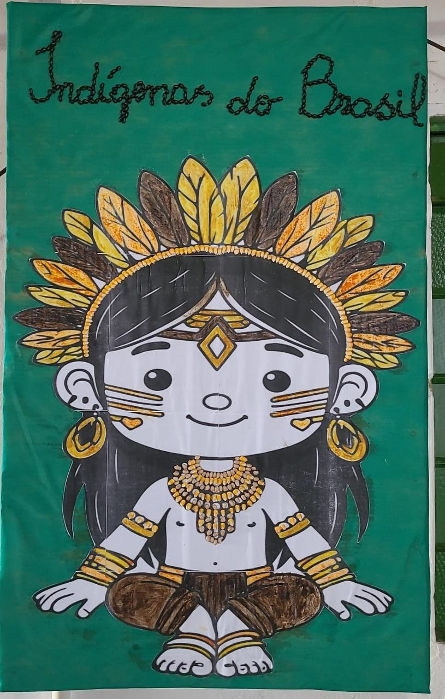
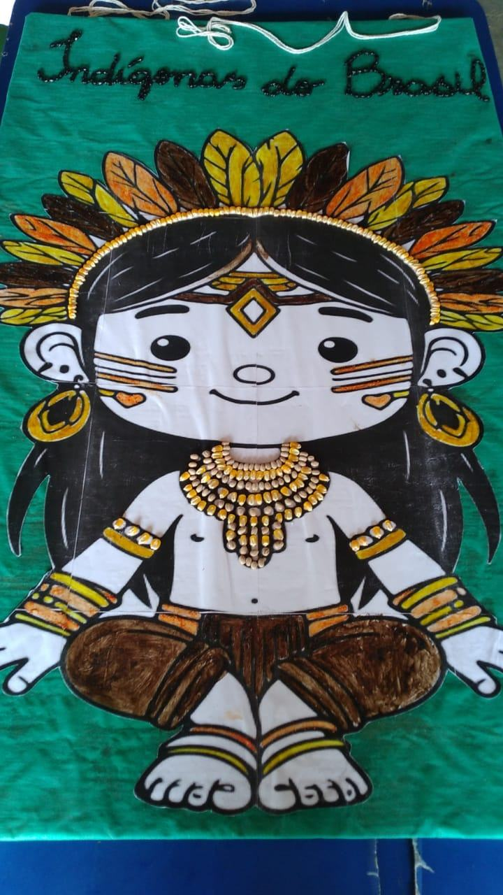
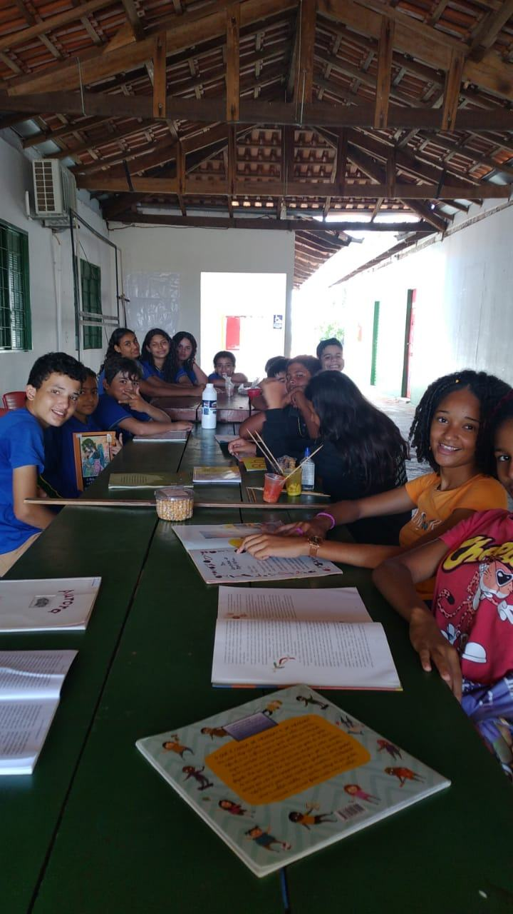

Arte dos povos indígenas
Depois de aulas sobre a cultura dos povos indígenas, as turmas do 6º e do 7º ano produziram painéis com elementos usados nos adereços e nas pinturas corporais. A arte seguiu ganhando novos elementos nas semanas seguintes.
Lídia de Camargo · 6º e 7º anos



No portfólio online: 5 fotos.